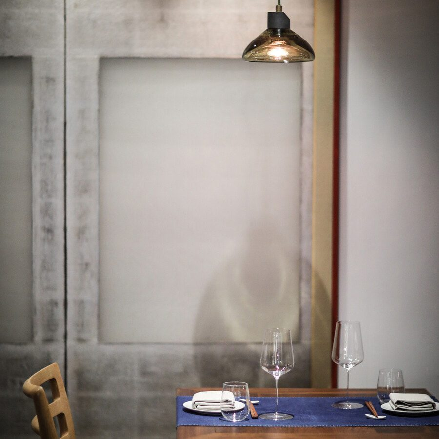
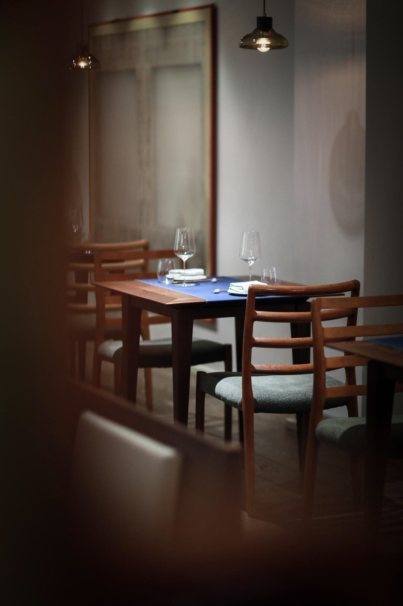
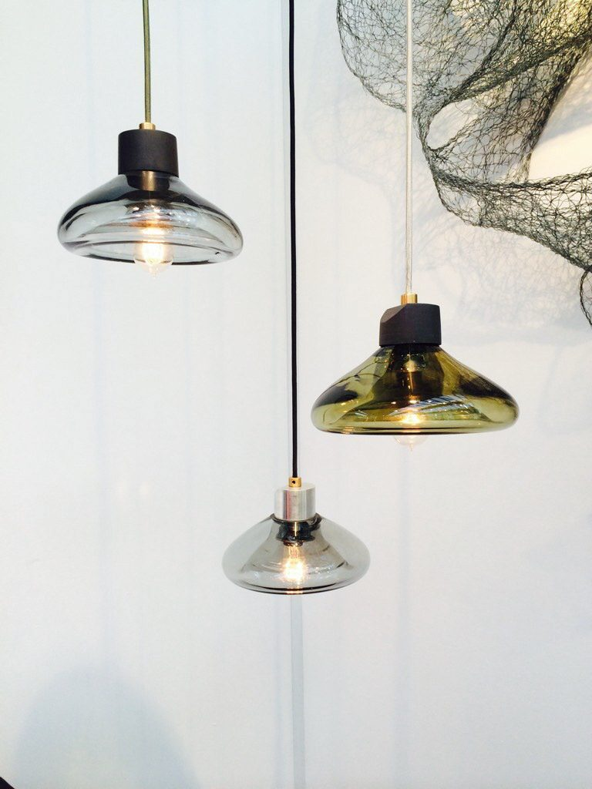

Lighting / 2014 / Chicago, IL
The Boolean Lamp and Pendant
Industrial design, product design

A hand blown pendant and table lamp built from a boolean intersection of two primitive forms.
The work
The Boolean Lamp starts from the ubiquitous aluminum clip light, the work light in every shop, and looks for luxury in the everyday.
The material question
Its geometry is a boolean intersection of two primitive volumes, a clean digital operation. The question was whether hand blown glass could hold it.
The making
Each one is blown by glass artisans in Chicago, one at a time, the result of an iterative design process. Variations in color, texture, and shape make each lamp its own within a consistent form. Glass in smoke, umber, or light blue, on a base of cast concrete, aluminum, or acrylic, as a pendant or a table lamp.
In place
The pendant later scaled into the Kuma's Corner West Loop interior, circling the bar and filling the west wall portals.
Details
- Year
2014 - Location
Chicago, IL - Category
Lighting - Materials
Hand blown glass, metal
Studio
- ChiLab Studio
- Chicago, Illinois
- Established 2013


Bring us a drawing,
a model, or a hunch.
The studio
Specialty material projects for architecture, interior design, public art, and the fine arts.
ChiLab Studio, Chicago, Illinois. Established 2013.
What we do
- Metal casting
- Glass
- Finishes
- Digital fabrication
- Metal fabrication
- Restoration
- Project management
Contact
info@chilabstudio.com
chilabstudio.com
Instagram @chilabstudio